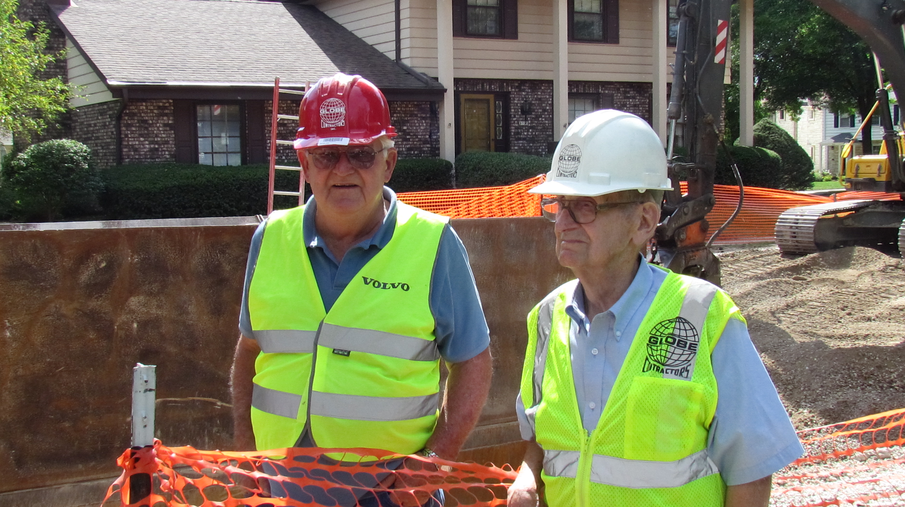

Trenchless
- 
Badger Drive Sanitary Sewer Force Main Rehab & Lift Station Upgrade
Waukesha, WI
Static pipe bursting consists of constructing a pit, feeding rods through the entire length of existing pipe, latching on to it at the other end, and pulling back the new pipe. The existing pipe is “bursted” in place by a bursting head attached to the front of the new pipe, displacing the fragments into the surrounding soil. For this project we pipe burst 4,675 LF of existing 10” ductile iron force main with 10” fusible HDPE (high density polyethylene). Ductile iron presents challenges as the old pipe must be split as the new pipe is brought through, rather than pipe such as vitrified clay, cast iron, and thinner classes of PVC which fracture easily under pressure. Taking this force main out of service meant we needed to pump sewage into large storage tanks and use tanker trucks to transport the sewage to the treatment plant.